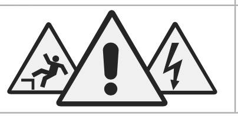

Situation — Adam commence en garage

Adam débute son stage dans un garage. Il voit des produits chimiques, des véhicules en mouvement et des outils bruyants. Son tuteur lui explique que la santé et la sécurité ne sont pas des options.
Cours standard adapté : mêmes objectifs que le programme CAP, textes courts, questions guidées, indices, corrigés, explications concrètes et audio sur les blocs.
Lire dans l’ordre. Chaque document est suivi de ses questions. Les images aident à comprendre, mais le texte suffit pour répondre.
Utiliser les aides. Ouvrir l’indice pour démarrer, le corrigé pour vérifier, puis l’explication pour comprendre avec un exemple concret.
Traiter l’information : repérer une information utile dans un document.
Analyser une situation : comprendre le problème, les personnes concernées et les causes possibles.
Mettre en relation : faire le lien entre une information du document et une connaissance du cours.

Adam débute son stage dans un garage. Il voit des produits chimiques, des véhicules en mouvement et des outils bruyants. Son tuteur lui explique que la santé et la sécurité ne sont pas des options.
1. À partir de la situation,
1.1C2Repérer deux dangers dans le garage.
Chercher ce qui peut provoquer un dommage.
Produits chimiques, véhicules en mouvement, outils bruyants.
Exemple : un produit irritant est un danger car il peut abîmer la peau ou les yeux.
1.2C3Expliquer pourquoi la sécurité concerne Adam dès le premier jour.
Penser au nouveau salarié qui ne connaît pas encore tous les risques.
La sécurité le concerne car il peut être exposé à des dangers avant de connaître toutes les habitudes du garage.
Exemple : une personne nouvelle peut ne pas savoir où circulent les véhicules ou où ranger les produits.
La santé-sécurité au travail a un enjeu humain : éviter les blessures et les maladies. Elle a un enjeu social : préserver les relations et les conditions de travail.
Elle a un enjeu économique : limiter les coûts des accidents, l’absentéisme et les arrêts de production. Elle a un enjeu juridique : respecter les obligations de l’employeur et les règles du Code du travail.
2. À partir du document 1,
2.1C1Classer les exemples dans le bon enjeu.
| Humain | Social | Économique | Juridique |
|---|---|---|---|
Associer chaque enjeu à ce qu’il protège : personne, relations, coûts ou loi.
Humain : santé. Social : relations/conditions. Économique : coûts/absences. Juridique : obligations/règles.
Exemple : une blessure touche d’abord la personne, mais elle peut aussi coûter à l’entreprise et désorganiser l’équipe.
2.2C5Argumenter l’intérêt de la prévention pour l’entreprise.
Montrer que prévenir est utile avant l’accident.
La prévention protège les salariés et évite des coûts liés aux accidents, aux absences et aux réparations.
Exemple : former un salarié à utiliser une machine prend du temps, mais évite des erreurs dangereuses.
Traiter l’information : repérer une information utile dans un document.
Mettre en relation : faire le lien entre une information du document et une connaissance du cours.
Un accident du travail est un événement soudain qui survient par le fait ou à l’occasion du travail et provoque une lésion.
Une maladie professionnelle apparaît souvent progressivement à cause d’une exposition à un risque dans le travail : gestes répétés, produits, bruit, poussières.
1. À partir du document 2,
1.1C3Associer chaque cas à AT ou MP.
| Élément | Réponse |
|---|---|
| Coupure avec un outil pendant le service | |
| Douleurs chroniques liées à des gestes répétés | |
| Brûlure soudaine en cuisine |
AT est soudain ; MP apparaît souvent progressivement.
Coupure : AT. Douleurs chroniques : MP. Brûlure soudaine : AT.
Exemple : une brûlure arrive à un moment précis ; une tendinite peut apparaître après de nombreuses répétitions.
1.2C1Relever deux facteurs pouvant provoquer une maladie professionnelle.
Chercher les expositions répétées ou prolongées.
Gestes répétés, produits, bruit, poussières.
Exemple : respirer souvent de la poussière de farine peut favoriser des troubles respiratoires.
En cas d’accident du travail, le salarié informe l’employeur rapidement, en indiquant le lieu, les circonstances et les témoins. L’employeur effectue ensuite la déclaration d’accident du travail auprès de l’Assurance Maladie dans le délai prévu.
Ces démarches permettent d’étudier le caractère professionnel de l’accident et d’organiser la prise en charge.
2. À partir du document 3,
2.1C1Citer trois informations à donner à l’employeur.
Penser à ce qui permet de comprendre l’accident.
Lieu, circonstances, témoins éventuels.
Exemple : “je me suis coupé à 10 h près de la scie, devant mon tuteur” est plus utile que “je me suis fait mal”.
2.2C6Rédiger un court message de déclaration.
Dire ce qui s’est passé, où et quand.
Exemple : “Je me suis brûlé la main droite à 9 h 30 au four, pendant la sortie des plaques.”
Exemple : un message précis aide l’employeur et le médecin à comprendre le lien avec le travail.
Mettre en relation : faire le lien entre une information du document et une connaissance du cours.
Proposer une solution : choisir une action adaptée à une situation.
Argumenter : donner une idée et l’appuyer avec une raison.
L’employeur doit prendre des mesures pour assurer la sécurité et protéger la santé physique et mentale des travailleurs. Il évalue les risques, met en place des actions de prévention, d’information et de formation.
Le salarié doit respecter les consignes, utiliser correctement les équipements et signaler une situation dangereuse.
1. À partir du document 4,
1.1C1Classer les obligations.
| Employeur | Salarié |
|---|---|
Séparer ce qui relève de l’organisation et ce qui relève du comportement au poste.
Employeur : évaluer les risques, former, informer. Salarié : respecter consignes, utiliser les équipements, signaler.
Exemple : l’employeur fournit une formation ; le salarié applique ensuite la méthode apprise.
1.2C4Proposer deux actions si Adam voit un bidon ouvert.
Penser sécurité immédiate et signalement.
S’éloigner si danger, prévenir le tuteur, ne pas toucher sans consigne, baliser si nécessaire.
Exemple : sentir un produit inconnu peut être dangereux ; il vaut mieux demander avant d’agir.